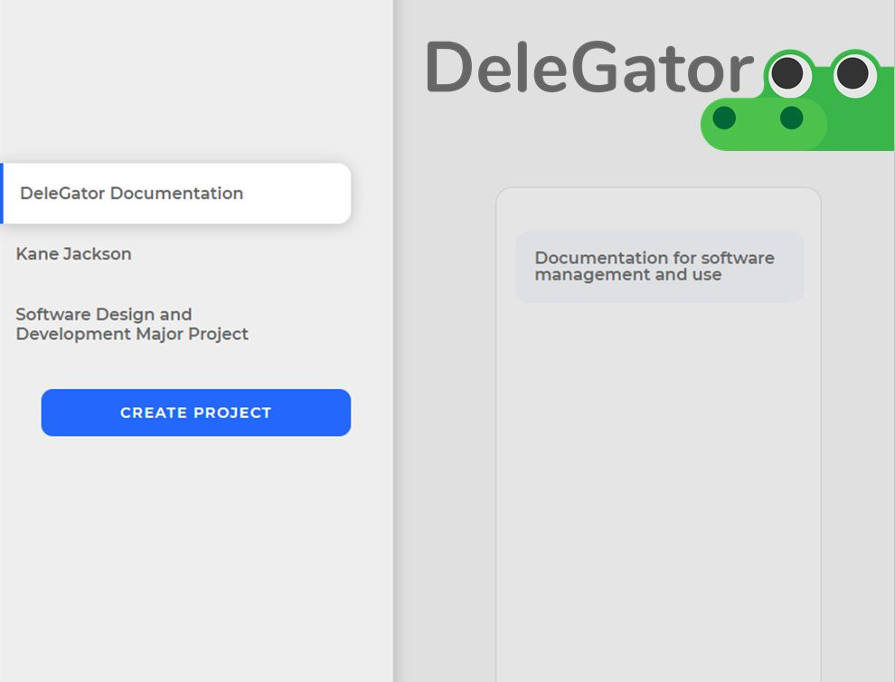

<section class="segment">
    <a class="segmentLeft" href="http://ec2-3-25-63-58.ap-southeast-2.compute.amazonaws.com/">
        
        <div class="imgOverlay"></div>
    </a>
    <div class="segmentRight">
        <div id="title">DeleGator</div>
        Similar to apps like Trello, this app helps organise the flow of 
        projects with ease of use. Users can create stories and allocate them to categories/stages/topics 
        and move them interchangeably.

        <b>Technologies used</b>
        <ul>
            <li>Node.js</li>
            <li>MySQL</li>
            <li>Angular.js</li>
        </ul>
        
    </div>
</section>